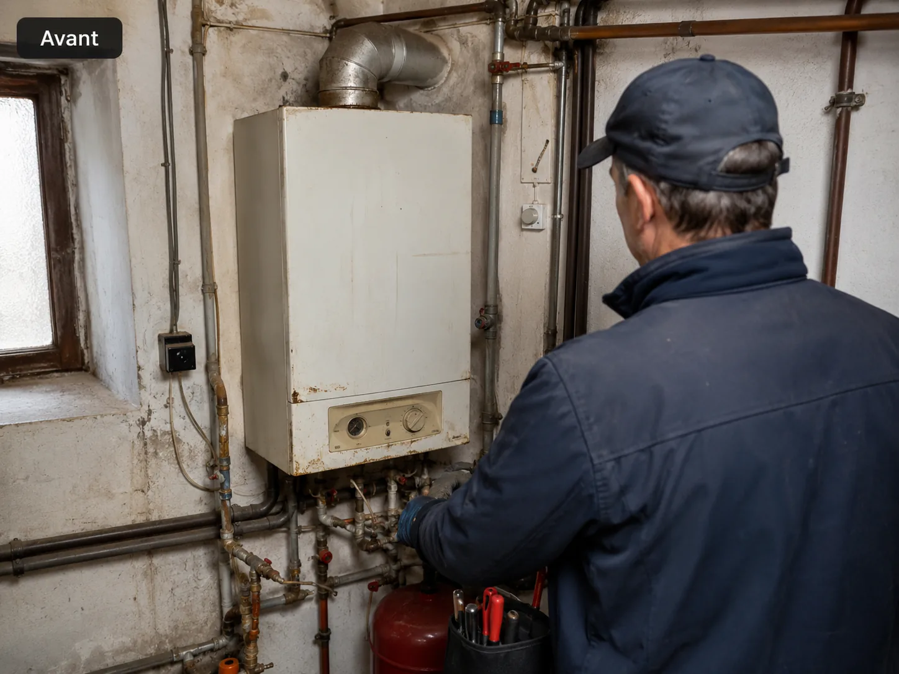

Dépannage chauffage
Analyse des pannes courantes et remise en fonctionnement lorsque l’installation le permet.
- Radiateur froid ou mal purgé
- Thermostat défectueux
- Circulation d’eau insuffisante
- Contrôle pression et sécurité
Chauffage & eau chaude
Cette page valorise les prestations à forte valeur : chauffe-eau, radiateurs, chaudière, ballon et optimisation de l’installation.

Analyse des pannes courantes et remise en fonctionnement lorsque l’installation le permet.
Intervention sur ballon électrique, résistance, groupe de sécurité et fuite liée au chauffe-eau.

Conseils pour améliorer le confort et réduire les pertes énergétiques.

Visites préventives pour limiter les pannes et prolonger la durée de vie des équipements.
Avant / Après
Des images concrètes montrent la différence entre une installation vieillissante et une installation claire, moderne et rassurante.